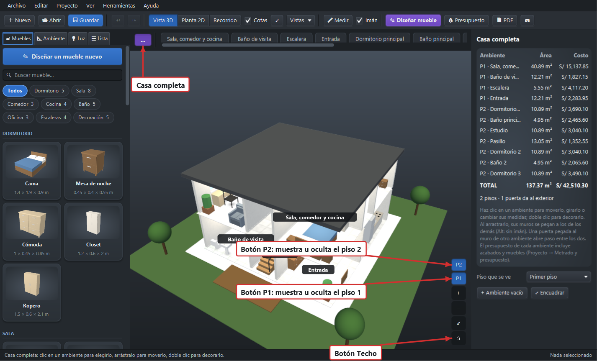

Diseña tu casa antes de comprar un solo mueble.
Space Cat es una aplicación gratuita para Windows. Dibujas cada ambiente con sus medidas reales, lo amueblas en 3D y te dice cuánta pintura, cerámico y zócalo necesitas, con el presupuesto en soles. Funciona sin internet.
Versión 2.1.0 para Windows 10 u 11 de 64 bits. Antes se llamaba Amoblador3D.

- Área
- 70.86 m²
- Medidas
- 4 ambientes
- Presupuesto
- S/ 23,366.15
Toda la casa: 137.37 m², 11 ambientes, S/ 42,510.30. Pasa el cursor o el teclado por un ambiente para ver sus datos.
Novedades de la versión 2.1.0
La aplicación se llama ahora Space Cat y ya no solo diseña interiores: la casa completa se ve como una maqueta, con fachada, techo y exteriores. Tus proyectos de Amoblador3D se abren igual.
La casa como maqueta
Todos los pisos apilados, con techo, fachada de acabado liso, patio, césped, un deck frente a la entrada y árboles. La luz imita al sol.
Un piso a la vez
Los botones P1 y P2 muestran u ocultan cada piso, y el botón Techo lo quita para mirar adentro. Solo cambian lo que se ve.
36 muebles
18 muebles nuevos: ropero, sillón, televisor, aparador, isla de cocina, alacena, tina, ducha, espejo, estante y la categoría Decoración, con alfombras, cuadros y cortinas.
- Casa de ejemplo a escala. Dos pisos en un terreno de 9 × 9 m: dormitorios de 3.30 × 3.30 m, baños de 3.30 × 1.50 m y un pasillo recto de 1.50 m; cada puerta comunica con el ambiente vecino.
- Mejor imagen 3D. Sombras de contacto bajo cada mueble y luz exterior más natural.
- Tus datos se conservan. La primera vez que abres Space Cat, copia solos los proyectos, diseños y precios de Amoblador3D.
Qué hace
En el Perú, siete de cada diez viviendas urbanas se autoconstruyen, y casi siempre se compra sin probar antes cómo queda. Space Cat te deja probarlo en la computadora: los muebles tienen su tamaño real, no se enciman ni tapan puertas, y cada cambio actualiza el presupuesto.
Toda la casa en 3D
Un proyecto puede tener sala, dormitorios, cocina y baño, en hasta cuatro pisos. Arrastra cada ambiente para armar la distribución: los muros se pegan a los vecinos y una puerta pegada a otro ambiente abre el paso.
Planta con medidas
Mira el ambiente desde arriba, con las cotas de cada pared y de cada mueble. Cambia ancho, profundidad, alto, color y acabado desde el panel derecho, y mide cualquier distancia con la tecla M.
Camina por dentro
Recorre el ambiente a la altura de los ojos con W, A, S y D. No atraviesas paredes ni muebles, así compruebas si de verdad se puede pasar entre la cama y el closet.
Arma tus propios muebles
Si no encuentras el mueble entre los 36 del catálogo, ármalo con cajas, cilindros, esferas y barras medidas en centímetros. También puedes importar modelos 3D .glb o .gltf.
Metrado y presupuesto
Calcula los m² de piso y de paredes sin contar puertas ni ventanas, los galones de pintura para dos manos y el cerámico con 10 % de desperdicio. Los precios se editan y se exportan a Excel o a un informe PDF.
Luz de día y de noche
Coloca bombillas, focos y la luz del sol que entra por una ventana. Con la tecla N apagas el sol para ver si las lámparas alcanzan.
Empieza desde una plantilla
Dormitorio, sala, comedor, cocina, baño u oficina ya amoblados y con medidas típicas, o una habitación vacía. Ves la planta antes de crearla y luego cambias lo que quieras.
Informe para entregar
Un PDF con las medidas del ambiente, la planta, la vista 3D, la ubicación de cada mueble y el presupuesto detallado, listo para imprimir o enviar al cliente (Ctrl+Shift+P).
- 36 muebles con medidas editables
- 11 materiales para paredes y piso
- 7 tipos de puerta y vano
- 0 conexiones a internet necesarias
Para quién es
Para cualquiera que tenga que decidir cómo queda un espacio y cuánto va a costar.
- Familias que construyen o remodelan
- Prueban la distribución y saben cuánto material comprar antes de ir a la ferretería.
- Maestros de obra y contratistas
- Muestran al cliente cómo quedará el ambiente y entregan el metrado y el presupuesto en PDF.
- Tiendas y fabricantes de muebles
- Comprueban con el cliente si el mueble entra, con sus medidas reales y en su color.
- Estudiantes de arquitectura y diseño
- Bocetan distribuciones rápidas con cotas, sin aprender un programa de modelado.
Cómo usarla
Un proyecto típico, de la habitación vacía al presupuesto.
-
Crea el ambiente
Elige Archivo → Nuevo o empieza desde una plantilla de dormitorio, sala, comedor, cocina, baño u oficina (Ctrl+Shift+N). Escribe el ancho, el largo y el alto en metros.
-
Pon puertas y ventanas
Con + Puerta y + Ventana las colocas en la pared que quieras. La aplicación no deja que se superpongan.
-
Elige los acabados
En la pestaña Ambiente eliges material y color para cada pared, el piso y el zócalo: pintura, ladrillo, cerámico, madera, porcelanato y más.
-
Amuebla
Arrastra muebles desde el catálogo de la izquierda. El imán los pega a las paredes. Gíralos con R y ajusta sus medidas y colores en el panel derecho.
-
Revisa y recorre
Cambia entre la vista 3D, la planta y el recorrido con Ctrl+1, 2 o 3. Si algo no te convence, Ctrl+Z lo deshace.
-
Saca el presupuesto
Con Ctrl+P ves el metrado y el costo; con Ctrl+Shift+P generas un informe PDF con la planta y la vista 3D. Guarda con Ctrl+S.
Atajos de teclado
Los más usados. Dentro de la aplicación, F1 muestra la lista completa.
- Ctrl+S
- Guardar el proyecto
- Ctrl+Z / Ctrl+Y
- Deshacer / rehacer
- Flechas
- Mover el mueble 5 cm (con Shift, 1 cm)
- R / Q E
- Girar 90° / girar 15°
- Ctrl+D / Supr
- Duplicar / eliminar
- L / G
- Bloquear el mueble / activar el imán
- Ctrl+1 2 3
- Vista 3D, planta o recorrido
- Ctrl+4
- Casa completa
- M
- Medir distancias
- N
- Modo noche
- Ctrl+P
- Metrado y presupuesto
- Ctrl+Shift+D
- Diseñador de muebles
Con el ratón en 3D: el botón izquierdo gira la cámara, el derecho la desplaza y la rueda acerca.
Código fuente
86 archivos Java (16 850 líneas) organizados en paquetes según su responsabilidad. Todas las clases llevan el prefijo FSHF, las iniciales del equipo. Abajo, la estructura del proyecto y tres fragmentos copiados tal cual del programa.
Estructura del proyecto
amoblador3d/
├── src/main/java/pe/edu/unaj/amoblador3d/
│ ├── model/ 16 archivos habitación, muebles, casa
│ ├── design/ 9 archivos reglas, deshacer, imán, plantillas, casa de ejemplo
│ ├── catalog/ 5 archivos catálogo de muebles
│ ├── estimate/ 4 archivos metrado y presupuesto
│ ├── persistence/ 11 archivos SQLite, .amob3d, autoguardado
│ ├── scene/ 17 archivos vista 3D, planta y recorrido
│ ├── gltf/ 2 archivos modelos 3D glTF
│ ├── report/ 2 archivos informe PDF
│ ├── ui/ 15 archivos ventanas y paneles
│ └── util/ 3 archivos utilidades
├── src/main/resources/ estilos, catálogo y modelos 3D
├── src/test/ pruebas automáticas (JUnit 5)
├── database/ scripts SQL (SQLite y PostgreSQL)
├── packaging/ creación del instalador
└── pom.xml dependencias y construcciónFragmentos del código
src/main/java/pe/edu/unaj/amoblador3d/model/FSHFFootprint.java, líneas 28 a 36
28public boolean overlaps(FSHFFootprint other) {
29 double dx = other.x - x, dz = other.z - z;
30 double[][] all = {axes()[0], axes()[1], other.axes()[0], other.axes()[1]};
31 for (double[] n : all) {
32 double distance = Math.abs(dx * n[0] + dz * n[1]);
33 if (distance >= projectedRadius(n[0], n[1]) + other.projectedRadius(n[0], n[1]) - EPS) return false;
34 }
35 return true;
36}Teorema del eje separador: si en alguno de los cuatro ejes las proyecciones de los dos muebles no se tocan, no chocan.
src/main/java/pe/edu/unaj/amoblador3d/estimate/FSHFPurchaseSpec.java, líneas 22 a 27
22public double quantity(double area) {
23 if (area <= 0) return 0;
24 double raw = area * coats * (1 + waste) / coverage;
25
26 return Math.ceil(raw / step - 1e-9) * step;
27}Convierte m² en lo que hay que comprar: manos de pintura, desperdicio, rendimiento y redondeo a la unidad de venta.
src/main/java/pe/edu/unaj/amoblador3d/persistence/FSHFDatabase.java, líneas 235 a 254
235private void migrate() throws SQLException {
236 int version;
237 try (Statement st = connection.createStatement(); ResultSet rs = st.executeQuery("PRAGMA user_version")) {
238 version = rs.next() ? rs.getInt(1) : 0;
239 }
240 if (version > SCHEMA_VERSION) {
241 throw new SQLException("La base de datos fue creada con una versión más nueva de Space Cat.");
242 }
243 for (int v = version; v < SCHEMA_VERSION; v++) {
244 String[] step = STEPS[v];
245 int next = v + 1;
246 transaction(c -> {
247 try (Statement st = c.createStatement()) {
248 for (String sql : step) st.execute(sql);
249 st.execute("PRAGMA user_version = " + next);
250 }
251 return null;
252 });
253 }
254}Aplica uno por uno, dentro de una transacción, los cambios de esquema pendientes; los proyectos se conservan al actualizar.
Documento del código fuente (PDF) Código fuente completo (PDF, 283 páginas) Ver el código completo en GitHub
Ingeniería detrás del producto
Space Cat (antes Amoblador3D) lo diseña, desarrolla y mantiene FSHF, nuestro equipo de ingenieros de sistemas y software. Lo construimos con un proceso iterativo, control de versiones, integración continua y pruebas automatizadas en cada entrega.
- Plataforma
- Java 21 y JavaFX, con aceleración 3D por hardware
- Datos
- Base SQLite local; el esquema ha migrado nueve versiones sin pérdida de proyectos
- Colisiones
- Teorema del eje separador: ningún mueble se encima, atraviesa muros ni bloquea puertas
- Calidad
- 123 pruebas automatizadas y 15 pruebas de sistema aprobadas; cobertura de 74 % a 92 % en dominio y datos
- Confiabilidad
- Autoguardado cada minuto, recuperación tras un cierre inesperado y registro de errores
- Formatos
- Proyectos .amob3d, modelos glTF y GLB, imágenes PNG, hojas CSV e informes PDF
El equipo
- Alexander Edson Flores CalcinaDirección del proyecto, arquitectura y desarrollo
- George James Sandia CondoriAnálisis de requisitos
- Erick Reison Huanca TiñaCalidad y pruebas
- Brayan Flores CcoriDocumentación y soporte al usuario
Descargas
Todo es gratuito. Si tienes dudas para instalar, empieza por el manual de instalación y ejecución.
La aplicación
Comprobar que la descarga es original (SHA-256)
En PowerShell, dentro de Descargas: Get-FileHash .\SpaceCat-2.1.0.exe. El resultado debe ser igual al de esta lista:
- SpaceCat-2.1.0.exe
F7461B795E7BA5DAA7421CC623B504358DE03255DCED201D0F5542107677CA03- SpaceCat-2.1.0-windows.zip
4C2DBC0A11C045E25F43F0F9B6DBA389C3F7D9B8093D4C3AD7C1B14D18223865- SpaceCat-2.1.0.jar
883DDF771705C988B2CE6361A15A63C3B3843A6C0513AF561F8011AE4EE15400
Al abrir el instalador, Windows puede mostrar "Windows protegió su PC" porque el programa no tiene firma digital. Haz clic en Más información y luego en Ejecutar de todas formas.
Documentación
Requisitos del equipo
| Mínimo | Recomendado | |
|---|---|---|
| Sistema | Windows 10, 64 bits | Windows 11 |
| Memoria | 4 GB | 8 GB |
| Video | Gráficos integrados con 3D | Tarjeta dedicada |
| Disco | 300 MB | 1 GB |
| Pantalla | 1280 × 720 | 1920 × 1080 |
Cómo instalar, paso a paso
Las pantallas reales del instalador. Cada flecha roja señala lo que hay que pulsar; el manual de instalación explica cada una con una tabla.
-
Descarga
En Descargas, pulsa Instalador para Windows. El navegador muestra SpaceCat-2.1.0.exe · 61.4 MB · Listo; haz clic en esa línea para abrirlo.
-
Aviso de Windows
Si aparece «Windows protegió su PC», comprueba que el nombre sea
SpaceCat-2.1.0.exey pulsa Ejecutar de todas formas (antes, Más información si no ves el botón). -
Bienvenida
El asistente está en inglés. En «Welcome to the Space Cat Setup Wizard» pulsa Next.
-
Carpeta
«Destination Folder» propone
AppData\Local\Space Cat. Déjala y pulsa Next, o elige otra con Change…. -
Instalar
En «Ready to install Space Cat» pulsa Install. No pide permisos de administrador.
-
Progreso
«Installing Space Cat» tarda menos de un minuto. Al terminar, pulsa Finish y abre Space Cat desde el menú Inicio o el escritorio.
Otras formas de instalar
Versión sin instalar (ZIP)
Para usarla en una USB o sin instalar.
-
Extraer todo
Clic derecho sobre
SpaceCat-2.1.0-windows.zipen Descargas y elige Extraer todo…. -
Elegir carpeta
Deja la carpeta propuesta, marca Mostrar los archivos extraídos al completar y pulsa Extraer.
-
Abrir
En
SpaceCat-2.1.0-windows\Space Cat, doble clic en Space Cat.exe. Las carpetasappyruntimedeben quedarse junto a él.
Archivo .jar y código fuente
Para quien ya tiene Java o quiere ver el código.
-
Comprobar Java
En PowerShell,
java -versiondebe mostrar 21 o un número mayor. -
Descargar el código
git clonedel repositorio; termina cuando dice done. -
Abrir desde el código
Doble clic en
Ejecutar-Amoblador3D.cmd: aparece este mensaje y luego la aplicación. No cierres la ventana.
Desinstalar
Los proyectos guardados no se borran.
-
Quitar la aplicación
En Configuración → Aplicaciones → Aplicaciones instaladas, busca Space Cat, pulsa … y elige Desinstalar.
Preguntas frecuentes
Si tu duda no está aquí, revisa el manual de instalación y ejecución o el manual de usuario.
¿Es gratis?
Sí. Space Cat, sus manuales y su código fuente se descargan sin costo desde esta página.
¿Necesito internet?
Solo para descargarla. Después funciona sin conexión: los proyectos, el catálogo y el presupuesto se guardan en tu computadora.
¿Funciona en Mac o en Linux?
Por ahora los instaladores son solo para Windows 10 y 11 de 64 bits. En otros sistemas se puede ejecutar desde el código fuente con Java 21, pero no está probado ni tiene soporte oficial.
¿Por qué Windows dice «Windows protegió su PC»?
Porque el instalador todavía no tiene firma digital, no porque tenga un problema. Pulsa Más información y luego Ejecutar de todas formas. Si quieres comprobar que el archivo es el original, usa su huella SHA-256 (en Descargas).
¿Dónde se guardan mis proyectos?
En la carpeta %APPDATA%\Space Cat de tu usuario. También puedes exportar cada proyecto como archivo .amob3d para guardarlo o abrirlo en otra computadora.
¿Los precios del presupuesto son reales?
Son precios referenciales en soles. Puedes cambiar cualquiera con doble clic en la tabla del presupuesto y se guardan para todos tus proyectos.
¿Puedo usar mis propios muebles?
Sí: arma muebles nuevos con el Diseñador de muebles o importa modelos 3D en formato .glb o .gltf, con sus medidas reales.
Tenía Amoblador3D, ¿pierdo mis proyectos?
No. La primera vez que abres Space Cat copia solos tus proyectos, diseños y precios de %APPDATA%\Amoblador3D a %APPDATA%\Space Cat, sin borrar la carpeta anterior. Los archivos .amob3d se abren igual. Cuando veas tus proyectos en Archivo → Abrir…, puedes desinstalar Amoblador3D.
¿Cómo la desinstalo?
En Configuración → Aplicaciones → Aplicaciones instaladas, busca Space Cat y elige Desinstalar. Tus proyectos no se borran; si también quieres borrarlos, elimina la carpeta %APPDATA%\Space Cat.